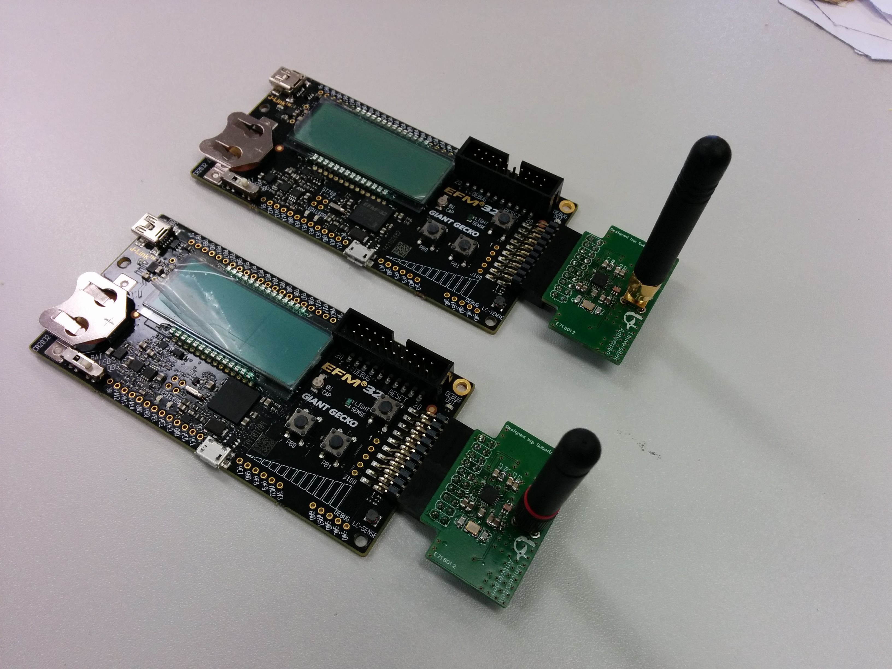

After a long time developing on the CC430, we are switching to a more powerful microcontroller. The CC430 is a 16 bit microcontroller and now the shift is made to a 32 bit cortex M3 from Silicon Labs. The development board that we are using is the Giant Gecko STK-3700. The CC430 is an SoC that contains a microcontroller and radio chip. The Giant Gecko is only a microcontroller and therefore we had to develop a radio module which can be plugged-in the expansion port of the Gecko starter kit.
Because the expertise that is build up around CC1101, the choice is made to develop first a CC1101 RF module. Later on, different RF chips will be included in the platform, but now we are focusing on the CC1101 and the Giant Gecko.
The Gaint Gecko is a development board that contains onboard programmer from Segger. There are few sensors on board that can be easily used with the DASH7 open software stack. There are four sensors: temperature, light sensor, metal detection and capacitive touch sensor. An LCD make it possible to show the sensor data on the screen, but also other data as received signal strength. A very nice feature that silicon lab provides is the Simplicity Studio software package. It not only contains a prepared IDE based on Eclipse, but also low-power measurement software to measure the impact of different parts of the code on the energy consumption.
Other important features:
- Two userbuttons
- Two LEDs
- CR2032 connector, other solution is to power the board with a USB connector
- All pins are accessible with a jumper cable
- USB on-the-go
The RF module is based on the basic schematic from the TI CC1101 development kit. Only this board provide a connector that smoothly fits on the Gaint Gecko. Currently two frequencies are supported, 433MHz and 868 MHz. The Giant Gecko STK-3700 is available on different online electronic component shops. Such as Farnell, Mouser, Digikey, etc. More information about this module and the schema itself is available on our supported hardware page If you have questions about the RF module you can contact use through mailing list or Github.
